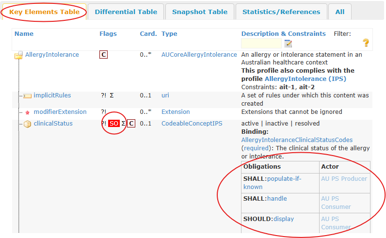

AU Patient Summary Implementation Guide
1.0.0-ci-build - CI Build

AU Patient Summary Implementation Guide
1.0.0-ci-build - CI Build

This page is part of the AU Patient Summary (v1.0.0-ci-build: QA Preview) based on FHIR (HL7® FHIR® Standard) R4. The current version which supersedes this version is the current version. For a full list of available versions, see the Directory of published versions
| Page standards status: Informative |
Systems claiming conformance to AU PS will represent digital health information using the content models of AU PS profiles AND implement the requirements of one or both AU PS actors.
The requirements of the FHIR standard and FHIR Conformance Rules apply, and define the use of terms in this guide including the conformance verbs - SHALL, SHALL NOT, SHOULD, SHOULD NOT, MAY.
Implementers are advised to be familiar with the requirements of the FHIR standard and the IPS when implementing AU PS, in particular:
The Profiles and Extensions page lists the AU PS profiles and extensions defined for this implementation guide. An AU PS profile StructureDefinition defines the minimum elements, extensions, vocabularies and value sets that SHALL be present and constrains the way elements are used when conforming to the profile.
AU PS profile elements include mandatory and Must Support requirements. Mandatory elements are required and have a minimum cardinality > 0. Must Support elements have defined conformance obligations in AU PS.
The Actor Definitions page lists the AU PS actors defined for this implementation guide and the requirements for implementing that actor. An AU PS profile StructureDefinition defines the obligations for an AU PS actor when implementing that profile.
Mandatory elements are elements with minimum cardinality > 0. When an element is mandatory, the data is expected to always be present. Very rarely, it may not be, and in this circumstance the requirements defined by AU Core for Missing Data SHALL be applied.
An element can be both Must Support and mandatory, and in this circumstance the requirements defined for Missing Must Support and Mandatory Data SHALL be applied.
The convention in this guide is to mark all mandatory and conditionally mandatory elements as Must Support unless they are nested under an optional element.
It is important to differentiate between the following mutually exclusive circumstances:
In the above circumstances the following is applied:
If the source system (AU PS Producer) does not know the value for an optional element (minimum cardinality = 0), including elements labelled Must Support, as per the requirements defined in AU Core, the data element SHALL be omitted from the resource.
If the data element is a mandatory element (minimum cardinality is > 0), the element SHALL be present even if the source system (AU PS Producer) does not know the value or the reason the value is absent. In this circumstance, the requirements defined by AU Core for Missing Must Support and Mandatory Data SHALL be applied.
Example: MedicationRequest resource where status and requester are missing
...
{
"resourceType" : "MedicationRequest",
"status" : "unknown",
"intent" : "order",
"medicationCodeableConcept" : {
"coding" : [
{
"system" : "http://snomed.info/sct",
"code" : "79115011000036100",
"display" : "Paracetamol 500 mg + codeine phosphate hemihydrate 30 mg tablet"
}
]
},
...
"authoredOn" : "2018-07-15",
"requester" : {
"extension" : [
{
"url" : "http://hl7.org/fhir/StructureDefinition/data-absent-reason",
"valueCode" : "unknown"
}
]
},
...
An AU PS Producer SHOULD omit non-mandatory sections when the source system does not have any information and does not know the reason the information is absent.
For a mandatory section (minimum cardinality is > 0), the section SHALL be present even if the source system (AU PS Producer) does not have any information for that section or know the reason the information is absent. In this circumstance, an AU PS Producer SHALL:
unavailable from the List Empty Reasons code systemAU PS Consumers are advised that other meaningful values can be captured in Composition.section.emptyReason beyond missing or suppressed.
Example: Allergies and Intolerances Section where the patient's allergy information is not available.
...
"section" : [
{
"title" : "Allergies and Intolerances",
"code" : {
"coding" : [
{
"system" : "http://loinc.org",
"code" : "48765-2",
"display" : "Allergies and adverse reactions Document"
}
]
},
"text" : {
"status" : "generated",
"div" : "<div xmlns=\"http://www.w3.org/1999/xhtml\" xml:lang=\"en-AU\" lang=\"en-AU\">There is no information available regarding the consumer's allergy conditions.</div>"
},
"emptyReason" : {
"coding" : [
{
"system" : "http://terminology.hl7.org/CodeSystem/list-empty-reason",
"code" : "unavailable",
"display" : "Unavailable"
}
],
"text" : "No information available"
}
},
...
Where the system does not have information for a particular section and there is a known workflow reason (for example, the patient preferred not to answer), the system SHOULD represent that reason by populating Composition.section.emptyReason:
Example: Allergies and Intolerances Section where there is a workflow reason the patient's allergy information is not available.
...
"section" : [
{
"title" : "Allergies and Intolerances",
"code" : {
"coding" : [
{
"system" : "http://loinc.org",
"code" : "48765-2",
"display" : "Allergies and adverse reactions Document"
}
]
},
"text" : {
"status" : "generated",
"div" : "<div xmlns=\"http://www.w3.org/1999/xhtml\" xml:lang=\"en-AU\" lang=\"en-AU\">The patient was not asked about allergies.</div>"
},
"emptyReason" : {
"coding" : [
{
"system" : "http://terminology.hl7.org/CodeSystem/list-empty-reason",
"code" : "notasked",
"display" : "Not Asked"
}
],
"text" : "Patient was not asked"
}
},
...
Where the system can assert "no known X" (for example, no known conditions) or "no history of X" (for example, no history of cardiovascular system disease), the system SHOULD populate Composition.section.entry in accordance with the relevant profile specific implementation guidance.
For example, to represent that a patient does not have an allergy or category of allergies, an appropriate negation code (e.g. 716186003 |No known allergy| or 1003774007 |No known Hevea brasiliensis latex allergy|) is used in AllergyIntolerance.code as per the profile specific implementation guidance.
In AU PS this approach is preferred to using Composition.section.emptyReason due to the widely known and implemented patterns established within the FHIR standard, IPS, and AU Core.
Example: Condition resource representing 'No Known Problems'
...
{
"resourceType" : "Condition",
"clinicalStatus" : "active",
"code" : {
"coding" : [
{
"system" : "http://snomed.info/sct",
"code" : "160245001",
"display" : "No current problems or disability"
}
]
},
...
In some circumstances, specific pieces of data are hidden:
unavailable or withheld from the List Empty Reason in Composition.section.emptyReason.unavailable or withheld from the List Empty Reason in Composition.section.emptyReason.if a mandatory element (minimum cardinality > 0) is not able to be shared, use the code unknown or masked from the DataAbsentReason Code System following the section on Missing Data.
Example: Allergies and Intolerances Section where the patient's allergy information is not allowed to be shared.
...
"section" : [
{
"title" : "Allergies and Intolerances",
"code" : {
"coding" : [
{
"system" : "http://loinc.org",
"code" : "48765-2",
"display" : "Allergies and adverse reactions Document"
}
]
},
"text" : {
"status" : "generated",
"div" : "<div xmlns=\"http://www.w3.org/1999/xhtml\" xml:lang=\"en-AU\" lang=\"en-AU\">This information is withheld.</div>"
},
"emptyReason" : {
"coding" : [
{
"system" : "http://terminology.hl7.org/CodeSystem/list-empty-reason",
"code" : "withheld",
"display" : "Withheld"
}
],
"text" : "Withheld"
}
},
...
Labelling an element Must Support means that systems that produce or consume resources SHALL provide support for the element in some meaningful way. The FHIR standard does not define exactly what 'meaningful' support for an element means, but indicates that a profile SHALL make clear exactly what kind of support is required when an element is labelled as Must Support.
In AU PS, the meaning of Must Support is specified in terms of Obligation Codes in obligation extensions on the element definition. The obligation codes used to define the minimum obligations of Must Support elements in this implementation guide are reiterated below.
| Actor | Code | Definition | Notes |
|---|---|---|---|
| AU PS Consumer actor | SHALL:handle | Conformant applications SHALL handle the meaning of this element correctly. | This rule is vague in that doesn't specify any particular handling of the element. But it's important because an application that ignores this element is non-conformant. A good example would be a status code of 'entered-in-error' - how exactly a Resource Consumer handles this depends on the use case etc., but the application can never simply ignore such a status code. Note that whether the resource or information from it is stored for later use is irrelevant - when the resource or information in it is processed, the consequences of the element are considered. In AU PS, all elements marked as Must Support have this obligation applied. |
| SHOULD:display | Conformant applications SHOULD display the value of this element when presenting the data to a human user. | Exactly how it is displayed is not specified, but it means that a human looking at the content of the resource is made aware of the value of the element so that they can consider the meaning of the resource. In AU PS, most elements marked as Must Support have this obligation applied. | |
| AU PS Producer actor | SHALL:populate | Conformant applications producing resources SHALL include this element if a value is known and allowed to be shared | This implementation obligation means that whenever the producer knows the correct value for an element, it populates it. This is NOT the same as cardinality, as a 'populate' element can be omitted if no data exists or the data that exists is prohibited from being shared. SHALL:populate combines able-to-populate and populate-if-known for the element. |
| SHALL:able-to-populate | Conformant applications producing resources SHALL be able to correctly populate this element. | Typically, this means that an application needs to demonstrate during some conformance testing process that there are some conditions under which it populates the element with a correct value. (i.e. not a data-absent-reason or equivalent.) This obligation does not impose expectations on the circumstances in which the element will be sent, only that it can be in at least some situations. | |
| SHALL:populate-if-known | Conformant applications producing resources SHALL correctly populate this element if they know a value for the element, but it is acceptable if the system is unable to ever know a value for the element. | This obligation does not impose a requirement to be able to know a value, unlike populate and able-to-populate which do. 'Knowing' an element means that a value for the element is available in memory, persistent store, or is otherwise available within the system claiming conformance. With the exception of AU PS Composition, all profiles referenced by AU PS Bundle have this obligation applied to elements marked as Must Support. | |
| SHOULD:able-to-populate | Conformant applications producing resources SHOULD be able to correctly populate this element. | Typically, this means that an application needs to demonstrate during some conformance testing process that there are some conditions under which it populates the element with a correct value. (i.e. not a data-absent-reason or equivalent.) This obligation does not impose expectations on the circumstances in which the element will be sent, only that it can be in at least some situations. | |
| SHOULD:populate-if-known | Conformant applications producing resources SHOULD correctly populate this element if they know a value for the element, but it is acceptable if the system is unable to ever know a value for the element. | This obligation does not impose a requirement to be able to know a value, unlike populate and able-to-populate which do. 'Knowing' an element means that a value for the element is available in memory, persistent store, or is otherwise available within the system claiming conformance. | |
| MAY:able-to-populate | Conformant applications producing resources MAY be able to correctly populate this element. | Typically, this means that an application needs to demonstrate during some conformance testing process that there are some conditions under which it populates the element with a correct value. (i.e. not a data-absent-reason or equivalent.) |
Additional information on the SHALL:handle obligation is provided in the Understanding the SHALL:handle Obligation section. Must Support elements are treated differently between AU PS Consumer and AU PS Producer actors. Must Support on a profile element SHALL be interpreted as detailed in the Interpreting Profile Elements Labelled Must Support section.
All elements with Must Support in AU PS are accompanied by an explicit obligation that identifies the expectations for one or more actors. When rendered in an implementation guide, each profile is presented in different formal views under tabs labelled "Differential Table", "Key Elements Table", and "Snapshot Table". Elements labelled with Must Support and stated obligations in these views are represented by SO as shown below.

Figure 1: Key Elements Table View
Implementers need to refer to the "Key Elements Table" to see the full set of elements that are mandatory or Must Support with obligations, and the full set of terminology requirements. Implementers need to be aware that the full set of constraints (i.e. invariants) are only presented in the "Detailed Descriptions" tab or the raw representation (e.g. XML or JSON) of the profile.
The section is provided as additional support in understanding the application of Must Support and obligations on elements in AU PS. This section does not override the obligations defined for an actor - implementers are recommended to also read the profile specific implementation guidance for any qualifying requirements placed on the obligations for a Must Support element.
Profiles defined in this implementation guide flag Must Support on elements (e.g. Patient.name) and sub-elements of a data type (e.g. Patient.name.use). The explanation on how to interpret Must Support for an element does not address rules defined in each profile - which may limit or extend what is allowed for each element.
The sub-elements for each supported element in a profile are defined by a combination of the data type from the core specification and any additional rules included in the profile. A profile may include rules that:
For example, the profile AU PS Patient limits what is considered valid for the element Patient.name with the invariant "au-core-pat-02: At least one patient name shall have a family name".
Typically AU PS profiles will inherit extended sub-elements from the base HL7 AU Core profile (which itself is based on an HL7 AU Base profile), e.g. the element Medication.code in profile AU PS Medication is of type CodeableConcept and is extended by inheriting a medicine specific sub-element Medication.code.coding.extension Medication Type extension from the source profile AU Base Medication.
The full set of sub-elements is visible in the "Key Elements Table" or "Snapshot Table" which shows the sub-elements defined in this profile (shown in the "Differential Table") and the sub-elements inherited from a base profile.
Obligations vary significantly for elements in the AU PS Composition profile, in particular obligations on Composition.section reflect the expectations of The "IPS" and ISO 27269. A summary is provided below:
Composition.section minimum cardinality > 0) AU PS Producers SHALL correctly populate the section if a value is known, SHALL be capable of populating Composition.section.entry with the referenced profiles, and SHOULD correctly populate Composition.section.entry if a value is known.Composition.section.entry if a value is known.Composition.section.entry if a value is known.See Structure of the Australian Patient Summary (AU PS) for information on the mandatory, recommended, and optional sections.
Primitive elements are single elements with a primitive value. If a primitive element is labelled as Must Support:
For example, the AU PS Organization Profile name element is a primitive string datatype. Therefore, when claiming conformance to this profile:
Organization.name if a value is known.Organization.name if present and containing any valid value, and SHOULD display the value of Organization.name when presenting the data to a human user.Complex elements are composed of primitive and other complex elements. Elements may have additional rules defined in the profile that also apply, e.g. invariants. Coded elements (CodeableConcept, Coding, and code datatypes) have additional rules defined by the terminology binding in the profile.
If a complex element is labelled as Must Support:
For example, the AU PS AllergyIntolerance Profile note element is labelled Must Support and has no Must Support sub-elements. When claiming conformance to this profile:
AllergyIntolerance.note sub-element if a value is known e.g. AllergyIntolerance.note.text.AllergyIntolerance.note if present and containing any valid sub-elements, and SHOULD display the value of AllergyIntolerance.note when presenting the data to a human user.If a sub-element is labelled as Must Support:
For example, in the AU PS Practitioner Profile, the name element is labelled Must Support and has Must Support sub-elements family and given. When claiming conformance to this profile:
Practitioner.name.family and Practitioner.name.given if the value for those sub-elements is known.Practitioner.name if present and containing valid values in Practitioner.name.family and Practitioner.name.given sub-elements, and SHOULD display the value of at least the sub elements Practitioner.name.family and Practitioner.name.given when presenting the data to a human user.Some elements labelled as Must Support have multiple cardinality (maximum cardinality> 1) such as Composition.authoror AllergyIntolerance.reaction.manifestation.coding. In such cases:
For example, in the AU PS Patient Profile, the address element is labelled Must Support. When claiming conformance to this profile:
Patient.address, for example populating both a home and postal address if both are known.Patient.address if present in the resource and containing any valid value.Patient.address when presenting the data to a human user.Some elements labelled as Must Support reference multiple resource types or profiles such as Observation.performer. In such cases:
The table below provides a list of AU PS profile elements that allow multiple referenced resource types or profiles.
| Profile | Must Support Element | Reference |
|---|---|---|
| AU PS Composition | Composition.author | AU PS Practitioner, AU PS PractitionerRole, Device, AU PS Patient, AU PS RelatedPerson, AU PS Organization |
| AU PS Composition | Composition.attester.party | AU PS Patient, AU PS RelatedPerson, AU PS Practitioner, AU PS PractitionerRole, AU PS Organization |
| AU PS Composition | Composition.section.entry:medicationStatementOrRequest | AU PS MedicationStatement, AU PS MedicationRequest |
| DiagnosticReport (IPS) | DiagnosticReport.subject | AU PS Patient, Group |
| DiagnosticReport (IPS) | DiagnosticReport.performer | AU PS Practitioner, AU PS PractitionerRole, AU PS Organization, CareTeam |
| DiagnosticReport (IPS) | DiagnosticReport.result:observation-results | AU PS Pathology Result Observation, Observation Results - Radiology (IPS) |
| AU PS Encounter | Encounter.participant.individual | AU PS Practitioner, AU PS PractitionerRole, AU PS RelatedPerson |
| AU PS Encounter | Encounter.reasonReference | AU PS Condition, Observation, AU PS Procedure |
| AU PS MedicationRequest | MedicationRequest.requester | AU PS Practitioner, AU PS PractitionerRole, AU PS Organization, AU PS Patient, AU PS RelatedPerson |
| AU PS MedicationRequest | MedicationRequest.reasonReference | AU PS Condition, Observation |
| AU PS MedicationStatement | MedicationStatement.reasonReference | AU PS Condition, Observation, DiagnosticReport (IPS) |
| Observation Results - Radiology (IPS) | Observation.performer | AU PS Practitioner, AU PS PractitionerRole, AU PS Organization, CareTeam, AU PS Patient, AU PS RelatedPerson |
| AU PS Patient | Patient.generalPractitioner | AU PS Organization, AU PS Practitioner, AU PS PractitionerRole |
| AU PS Pathology Result Observation | Observation.performer | AU PS Practitioner, AU PS PractitionerRole, AU PS Organization, AU PS Patient, AU PS RelatedPerson |
| AU PS Procedure | Procedure.reasonReference | AU PS Condition, Observation, AU PS Procedure, DocumentReference |
Some elements labelled as Must Support allow different data types such as Observation.effective[x]. In such cases:
The table below provides a list of AU PS profile elements that allow multiple data types.
| Profile | Must Support Element | Data Types |
|---|---|---|
| AU PS AllergyIntolerance | AllergyIntolerance.onset[x] | dateTime, age, Period, Range |
| AU PS Condition | Condition.onset[x] | dateTime, age, Period, Range |
| AU PS Condition | Condition.abatement[x] | dateTime, age, Period, Range |
| DeviceUseStatement (IPS) | DeviceUseStatement.timing[x] | Period, dateTime |
| DiagnosticReport (IPS) | DiagnosticReport.effective[x] | dateTime, Period |
| AU PS Immunization | Immunization.occurrence[x] | dateTime, string |
| AU PS MedicationRequest | MedicationRequest.medication[x] | CodeableConcept, Reference |
| AU PS MedicationStatement | MedicationStatement.medication[x] | CodeableConcept, Reference |
| AU PS MedicationStatement | MedicationStatement.effective[x] | dateTime, Period |
| Observation Results - Radiology (IPS) | Observation.effective[x] | dateTime, Period |
| Observation Results - Radiology (IPS) | Observation.value[x] | Quantity, CodeableConcept, string, boolean, integer, Range, Ratio, SampledData, time, dateTime, Period |
| AU PS Pathology Result Observation | Observation.effective[x] | dateTime, Period, |
| AU PS Pathology Result Observation | Observation.value[x] | Quantity, CodeableConcept, string, boolean, integer, Range, Ratio, SampledData, time, dateTime, Period |
| AU PS Pathology Result Observation | Observation.component.value[x] | Quantity, CodeableConcept, string, boolean, integer, Range, Ratio, SampledData, time, dateTime, Period |
| AU PS Procedure | Procedure.performed[x] | dateTime, Period, string, Age, Range |
Some data type choices are labelled as Must Support and apply an additional obligation of SHOULD:able-to-populate. In such cases:
The table below provides a list of AU PS profile elements where a data type choice is labelled SHOULD:able-to-populate.
| Profile | Must Support Data Type |
|---|---|
| AU PS AllergyIntolerance | AllergyIntolerance.onsetDateTime |
| AU PS Condition | Condition.onsetDateTime |
| DeviceUseStatement (IPS) | DeviceUseStatement.timingDateTime |
| DiagnosticReport (IPS) | DiagnosticReport.effectiveDateTime |
| AU PS Immunization | Immunization.occurrenceDateTime |
| AU PS MedicationStatement | MedicationStatement.effectiveDateTime |
| Observation Results - Radiology (IPS) | Observation.effectiveDateTime |
| AU PS Pathology Result Observation | Observation.effectiveDateTime |
| AU PS Procedure | Procedure.performedDateTime |
A profile may define support for one, none, or many identifier types. Supported identifier types are included in a profile by slicing the identifier element and placing Must Support on each identifier slice.
Where no identifier slice is included in a profile, there is no expectation that a specific identifier type is supported and the section on Must Support - Complex Elements applies.
Where one or more identifier types are supported:
The table below provides a list of AU PS profile elements with one or more supported identifier types.
| Profile | Must Support Element | Supported Identifiers |
|---|---|---|
| AU PS Organization | Organization.identifier | HPI-O, Australian Business Number |
| AU PS Patient | Patient.identifier | IHI, Medicare Card Number, DVA Number |
| AU PS Practitioner | Practitioner.identifier | HPI-I |
| AU PS PractitionerRole | PractitionerRole.identifier | Medicare Provider Number |
For example, the profile AU PS Organization defines support for the Healthcare Provider Identifier - Organisation (HPI-O) and Australian Business Number (ABN) identifier types as slices of Organization.identifier flagged with Must Support. When claiming conformance to the AU PS Organization Profile:
Organization.identifier with at least one of HPI-O or ABN if known, or any other identifier type when neither HPI-O or ABN are known but some other identifier is known (e.g. NATA Accreditation Number).Organization.identifier if present and containing any valid value. A valid value may be an HPI-O or ABN, or may be any other valid identifier type allowed by the element definition (e.g. NATA Accreditation Number). The AU PS Consumer SHOULD display the value of each populated identifier type (HPI-O, ABN, or some other identifier) when presenting the data to a human user.Systems MAY support populating other identifiers, but this is not a requirement of AU PS.
A resource may support two elements that are used to indicate a reason, e.g. Encounter.reasonCode and Encounter.reasonReference in the profile AU PS Encounter. In such cases:
The table below lists the applicable profiles and elements in AU PS.
| Profile | Must Support Choice Elements |
|---|---|
| AU PS Encounter | Encounter.reasonCode, Encounter.reasonReference |
| AU PS MedicationRequest | MedicationRequest.reasonCode, MedicationRequest.reasonReference |
| AU PS MedicationStatement | MedicationStatement.reasonCode, MedicationStatement.reasonReference |
| AU PS Procedure | Procedure.reasonCode, Procedure.reasonReference |
A coded element can have support defined for one or more value sets. Coded elements that define support for more than one value set include them in a profile by slicing the Coding part of the element and placing Must Support on each value set slice. These value set slices are not intended to prevent systems from supplying only a text value.
Most coded Must Support elements in AU PS define support for one value set, which is bound to the element and no value set slice is present. For these elements, the section on Must Support - Complex Elements and the terminology binding applies.
Where multiple value sets are supported:
The table below lists the applicable profiles and elements in AU PS that support multiple value sets; these are inherited from AU Core.
| Profile | Must Support Sub-Element | Terminology Choices |
|---|---|---|
| AU PS Immunization | Immunization.vaccineCode.coding | Australian Medicines Terminology Vaccine, Australian Immunisation Register Vaccine |
| AU PS Medication | Medication.code.coding | Australian Medication, PBS Item Codes |
| AU PS MedicationRequest | MedicationRequest.code.coding | Australian Medication, PBS Item Codes |
| AU PS MedicationStatement | MedicationStatement.code.coding | Australian Medication, PBS Item Codes |
For example, the profile AU PS Medication defines support for Australian Medication and PBS Item Codes value sets as slices of Medication.code.coding flagged with Must Support.
When claiming conformance to the AU PS Medication profile:
Medication.code.coding with codes from Australian Medication and PBS Item Codes if both coded values are known, or from either if only one is known, or from another terminology if neither is known but a code is available, or text only if no coded value is known.Medication.code.coding if present and containing any valid value. A valid value may be text, or may be a code from Australian Medication or PBS Item Codes, or both, or some other code. AU PS Consumers SHOULD display the value of this element when presenting the data to a human user.Systems MAY populate other code systems but this is not a requirement of AU PS.
In AU PS, all elements labelled as Must Support have the SHALL:handle obligation for AU PS Consumers. For these elements:
The SHALL:handle obligation is defined broadly and does not specify what is required to handle the meaning of an element correctly. Additional support in understanding the application of this obligation in the context of AU PS is provided below.
The SHALL:handle obligation requires a consuming system to understand the meaning of the element and recognise the consequences of not using any of the element data. Ignoring an element without considering these consequences constitutes non-conformance. During testing, system providers can be required to explain how their system uses element data and the implications of receiving values that are not supported.
Handling might involve processing, displaying, printing, persisting for later use, not using a particular element occurrence, raising an error, rejecting an entire document based on business or safety rules or applying a fallback behaviour (e.g. using narrative when structured data is unknown).
The following table provides some examples of handling that a consuming system might implement based on understanding the meaning of an element and the consequences of not using the element within the system's context of use. These examples are non-exhaustive and intended to be useful but they are not a normative part of the specification nor are they fully representative of real world examples.
| Handling | Element | Example handling behaviour a system might choose, upon consideration |
|---|---|---|
| Display | MedicationStatement.medication[x] |
|
| Store and selective display | Patient.address |
|
| Selective import | Condition.clinicalStatus |
|
| Reject or restrict use | Composition.status |
|
| Do not use operationally | MedicationStatement.reasonCode, MedicationStatement.reasonReference |
|
| Use of coded values | AllergyIntolerance.code |
|
IG © 2024+ HL7 Australia. Package hl7.fhir.au.ps#1.0.0-ci-build based on FHIR 4.0.1. Generated 2026-06-19
Links: Table of Contents |
QA Report
| Version History |
 |
Propose a change
|
Propose a change